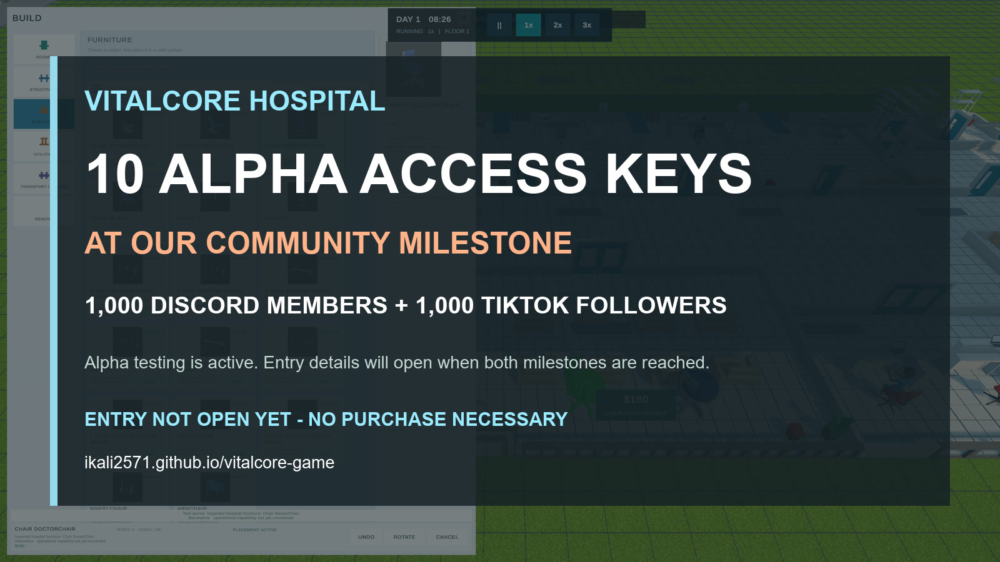

+
Build & Design
Construct floors, walls, rooms, doors, windows, utilities, furniture, ambulance access, and specialized clinical spaces.
Discuss the system →DEEP HOSPITAL MANAGEMENT SIMULATION
Design, operate, and expand a modern hospital campus. Coordinate patient care, staffing, surgery, critical care, specialties, teaching, research, finance, and long-term growth.

COMMUNITY MILESTONE / ENTRY NOT OPEN YET
VitalCore Hospital is in active alpha testing. When the community reaches both 1,000 Discord members and 1,000 TikTok followers, we will open a free giveaway for ten alpha access keys.
No purchase necessary. Following or joining does not create an entry. Eligibility, entry dates, winner selection, and complete official rules will be published when entry opens.
THE VISION
VitalCore Hospital is a healthcare institution simulator. Start with a single hospital campus, build every department, manage real operational pressure, and develop the organization into an advanced teaching and research center.
The Early Access focus is one city, one hospital campus, and a deep hospital-management loop. Multi-facility networks and a living city simulation are reserved for future expansion.

CURRENT GAME SYSTEMS
Every system creates pressure somewhere else. Build with intent, read the operation, and make the institution work as one living whole.
Construct floors, walls, rooms, doors, windows, utilities, furniture, ambulance access, and specialized clinical spaces.
Discuss the system →Track patient flow, queues, staffing pressure, capacity blockers, emergency activity, inpatient care, and throughput.
Coordinate perioperative readiness, theatre scheduling, surgical execution, handoff, ICU requests, and step-down planning.
Develop diagnostic, treatment, ward, surgery, ICU, specialty, administrative, and support service lines.
Monitor payroll, operating pressure, billing, reimbursement, affordability, inventory, quality, reputation, and growth.
Build academic capacity, project learner cohorts and rotations, evaluate accreditation, and develop research.
Support returning patients, chronic conditions, medications, referrals, recovery assessment, and longitudinal history.
Use searchable catalogs, placement feedback, persistent tools, authoritative undo history, and save/load support.
BUILD MODE
Browse categorized rooms, structures, furniture, utilities, and access infrastructure through visual cards with thumbnails, search, costs, requirements, and diagnostics.

AUTHENTIC GAMEPLAY
The latest walkthrough shows the v0.3.9 tester notice and F8 bug-reporting flow, Chapter One construction, the live building catalog, the Clinical Operations Command Center, city property expansion, and Cedar Grove at full scale. The 1440p reel and every image in this section were captured directly from the current work-in-progress build.


DEVELOPMENT PROGRESS / AUGUST 19, 2026
Today’s recorded build brings the current alpha experience together: tester onboarding and F8 reporting, Chapter One objectives, live construction and furniture tools, the Clinical Operations Command Center, the city property board, and a broader view of Cedar Grove. These systems are shown in authentic gameplay and remain under active testing and refinement.
EARLY ACCESS ROADMAP
Navigation verification, ceiling-light placement, construction regression testing, save management, and long-session reliability.
Main menu polish, save deletion, onboarding, starter scenarios, clearer feedback, and UI consistency.
Large-hospital profiling, long-session testing, visual acceptance, bug triage, and scope freeze.
Multiple facilities, patient transfers, shared specialists, EMS systems, air medical transport, and a deeper living-city ecosystem.
FAQ
A deep hospital-management and healthcare-institution simulator combining construction, clinical operations, administration, academic medicine, research, and strategic growth.
One city, one fully buildable hospital campus, and a deep single-hospital simulation. Multi-hospital and living-city systems are reserved for later development.
Yes. Images labeled real gameplay were captured directly from the current low-poly VitalCore Hospital build. Development visuals, interface elements, balance, animation, and layouts may change.
VitalCore Hospital development updates are published weekly on this website, itch.io, and Discord. Authentic gameplay videos are posted on YouTube, with shorter clips and development posts on TikTok.
JOIN THE JOURNEY
Follow development, share feedback, report issues, and watch VitalCore Hospital grow from a hospital simulator into a complete healthcare institution experience. Weekly updates will be shared on this website and in the VitalCore Hospital Discord community.